SAÉ 2.03 - Rapport final
ZAVADSKIYI Mark
ZHENG Angèl
LAVOGIEZ Baptiste
DEMARET Thibaut
Rapport final
Préface
Comme un l’est sur une journée ensoleillée, le format markdown sera le support de notre document. Ce rapport servira à démontrer la facilité de production d’un document propre et professionnel à travers diverses questions portant sur l’installation de services réseaux.
Semaine 01 : Services réseaux, automatisation
Question(s) 1. Configuration matérielle dans VirtualBox
Ces questions porteront sur Oracle VM VirtualBox, un logiciel réputé pour ses fonctionnalités de machine virtuelle, soit un ordinateur à l’intérieur d’un ordinateur (pour faire simple).
Que signifie “64-bit” dans “Debian 64-bit” ?
Une Debian qualifiée de “64-bit” est optimisée/conçue pour fonctionner uniquement sur des processeurs utilisant une architecture 64 bits, où la taille des registres mémoire est de 64 bits. 1
Quelle est la configuration réseau utilisée par défaut ?
VirtualBox est configuré par défaut en mode réseau NAT (Network Address Translation), ce qui signifie que la machine virtuelle accède à Internet via l’adresse IP de l’hôte, agissant comme un intermédiaire. 2
Quel est le nom du fichier XML contenant la configuration de votre machine ?
Ce fichier est “sae203.vbox”.
Le format XML, pour information, sert à saisir des informations de configuration basique (paramétrage) compréhensibles pour tous.

Sauriez-vous modifier directement ce fichier pour mettre 2 processeurs à votre machine ? Faites-le.
Dans la section Hardware puis CPU, modifier count à 2.
Note : Lorsqu’il n’y a aucun CPU (processeur), la variable count n’est pas mentionnée.
Question(s) 2.
Installation OS de base
Qu’est-ce qu’un fichier iso bootable ?
Un fichier iso bootable est une image disque qui contient tous les fichiers nécessaires au démarrage d’un système. Il permet soit d’exécuter un système d’exploitation en mode “Live”, soit de procéder à son installation, comme ça a été fait pour Debian sur notre machine virtuelle.. 3
Qu’est-ce que MATE ? GNOME ?
MATE et GNOME sont des interfaces graphiques (GUI) (aussi appelés interfaces, environnements de bureau) pour les systèmes GNU/Linux, facilitant l’utilisation du système via une interface visuelle. 4
Un serveur est en quelque sorte un ordinateur/système à la disposition d’autres ordinateurs/systèmes sur un réseau.
Qu’est-ce qu’un serveur web ?
Un serveur web permet d’accueillir des pages web ou d’autres ressources accessibles via le réseau en utilisant le protocole HTTP. Le protocole HTTP régit les échanges entre un client Web et un serveur Web. 5
Qu’est-ce qu’un serveur ssh ?
Un serveur SSH permet d’établir une connexion à distance sur un système via un terminal. 6
Un terminal est un espace de saisie de commandes.
Qu’est-ce qu’un serveur mandataire ?
Un serveur mandataire, souvent appelé proxy, agit comme un intermédiaire pour la communication entre deux hôtes. 7
Question 3. sudo
Comment peut-on savoir à quels groupes appartient l’utilisateur user ?
La commande
groupsrenvoie la liste des groupes où l’utilisateur appartient. Ici, on peut voir queuserest désormais danssudo8
Rappel : le groupe sudo représente le groupe des utilisateurs ayant accès au droit de super-utilisateur. Exemple:
Question(s) 4. Suppléments invités
Quelle est la version du noyau Linux utilisé par votre VM ?
La commande
uname -vrenvoie des informations sur la version de notre noyau (kernel) utilisé par notre système, dans notre cas la version 4.19.316-1 (2024-06-25). 9
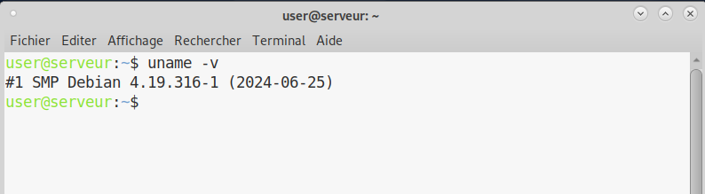
À quoi servent les suppléments invités ? Donner 2 principales raisons de les installer.
Les suppléments invités permettent une meilleure intégration entre la machine virtuelle et le système hôte, d’origine, avec par exemple 10 :
Un pilote d’affichage avec accélération graphique pour améliorer les performances visuelles de la machine virtuelle.
La modification de la lorsque l’on redimensionne la fenêtre du système de la machine virtuelle.
Un glisser-déposer () pour facilement transférer des fichiers entre le système hôte et l’invité.
À quoi sert la commande mount (dans notre cas de
figure et dans le cas général) ?
La commande mount est utilisée pour associer un système de fichiers stocké sur un périphérique (comme un disque dur ou une image ISO) à un point d’accès dans l’arborescence des fichiers du système. Ici elle permet de monter l’image iso des suppléments invités VirtualBox, située dans le lecteur CD virtuel (mnt) pour une application des contenus. 11
Attention : Cette commande est à utiliser avec précaution car elle peut occasionner des dommages aux disques.
Question(s) 4.2 - Quelques questions:
Qu’est-ce que le projet Debian ? D’où vient le nom Debian ?
Le projet Debian est une association d’individus qui ont pour cause commune de créer un système d’exploitation libre. Debian est une distribution spécifique du système d’exploitation Linux disposant de nombreux paquets. Les systèmes Debian utilisent actuellement le noyau Linux ou le noyau FreeBSD. Le mot Debian est la contraction des noms Debra et Ian Murdock, qui ont fondé le projet. 12
Il existe 3 durées de prise en charge (support) de ces versions : la durée minimale, la durée en support long terme (LTS) et la durée en support long terme étendue (ELTS). Quelles sont les durées de ces prises en charge ?
La durée minimale de support d’une version est de 1 an après la sortie de version suivante. La durée de support en long terme (LTS) est d’au moins 5 ans. La durée de support en long terme étendue étend la durée LTS d’encore 5 ans mais il ne s’agit pas d’un projet officiel de Debian. 13
Pendant combien de temps les mises à jour de sécurité seront-elles fournies ?
L’équipe en charge de la sécurité prend en charge la distribution stable pendant trois années après sa publication. Debian étant avant tout une association d’individus et non une entreprise, ses ressources sont précieuses, ainsi elle ne peut maintenir plus de trois versions. 14
Il est préférable d’utiliser une version à jour en termes de sécurité.
Combien de versions au minimum sont activement maintenues par Debian ? Donnez leur nom générique (= les types de distribution).
Près de 3 versions courantes existent au minimum. Il y a :
La distribution stable contenant la dernière distribution officiellement sortie de Debian.
La distribution testing contenant les paquets qui n’ont pas encore été acceptés dans la distribution stable, mais qui sont en attente de l’être. Le principal avantage d’utiliser cette distribution est qu’elle contient des versions plus récentes des logiciels.
La distribution unstable est celle sur laquelle les activités de développement se déroulent. Généralement, cette distribution est utilisée par les développeurs. 15
Chaque distribution majeure possède un nom de code différent. Par exemple, la version majeure actuelle (Debian 11) se nomme Bullseye. D’où viennent les noms de code donnés aux distributions ?
Les noms sont basés sur les personnages du film Toy Story. 16
L’un des atouts de Debian fut le nombre d’architectures (processeurs) officiellement prises en charge. Combien et lesquelles sont prises en charge par la version Bullseye ?
Près de 9 architectures différentes sont prises en charge par Debian 17
- Tableau les présentant :
| Architecture | Description |
|---|---|
| amd64 | AMD64 PC 64 bits / Intel EM64T / x86-64 |
| i386 | i386 PC 32 bits / Intel IA-32 |
| ppc64el | PowerPC 64 bits little-endian Motorola/IBM PowerPC |
| s390x | S390 64 bits IBM S/390 |
| armel | ARM |
| armhf | Anciens matériels ARM et de plus récentes architectures 32 bits |
| arm64 | Architectures ARM 64 bits Arch64 |
| mipsel | MIPS 32 bits little-endian |
| mips64el | MIPS 64 bits little-endian |
Première version avec un nom de code.
Debian 1.1 (Buzz), est la première version, sortie le 17 juin 1996, et contenait 474 paquets. Debian a par la suite terminé sa transition vers le format binaire ELF et utilisait le noyau Linux 2.03. 18
Dernière version avec un nom de code.
Debian 14 “Forky” est la dernière version à ce jour, annoncée le 13 octobre 2022. Peu d’informations sont encore données à son sujet, mais la version Trixie est actuellement en phase “testing”. 19
Question(s) 5 : ajustement de la pré-configuration
Les principales réponses se trouveront dans le fichier
preseed-fr.cfg.
Il est déjà important de comprendre ce fichier. Il constitue la configuration de l’installation automatique de notre machine virtuelle, fonctionnant à la suite. Pour rendre ça simple, c’est comme si un humain entrait ces commandes, attendait la fin de chaque exécution, pour ensuite saisir la prochaine ; d’où l’intérêt d’une installation automatisée !
Il sera normal de rencontrer des erreurs au cours de l’installation. Nous en avons rencontré beaucoup et nous les détaillerons !
Modifier votre configuration (et recommencez l’installation) afin de :
- Ajouter le droit d’utiliser sudo à l’utilisateur
standard.
Ici, nous avons ajouté les droits sudo à user.
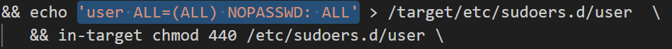
Cette méthode est relativement compliquée à trouver et nous a donc demandé un peu de recherche.
Pourquoi cette méthode ? Ici nous allons en quelque sorte venir écrire dans le fichier sudoers (gérant les droits des utilisateurs par le paquet sudo ; se référer à l’explication) 20 avec la commande echo, pour y inscrire les règles de droit concernant notre utilisateur user. Comme si un humain venait le faire, mais de façon automatique !
Pour rappel, les droits sudo sont les droits administrateur/super-utilisateur, permettant la saisie de commandes plus importantes sur le système.
- Installer l’environnement MATE.
Ici, nous avons rajouté mate-desktop à la liste des méta-paquets que nous souhaitons rechercher.

- Ajouter les paquets suivants :
sudo: sinon la gestion sudo est inutile.git,sqlite3,curl: pour préparer l’installation de la semaine prochaine.bash-completion: va vous simplifier grandement l’écriture des lignes de commande.neofetch: pas très utile mais c’est un classique dans son genre (essayez-le).
d-i pkgsel/include string sudo git sqlite3 curl bash-completion neofetch
Ici, il a suffi, après s’être documenté un peu sur l’instruction, de rajouter les paquets demandés sous forme de liste. La commande, d-i pkgsel est assez intuitive puisqu’il suffit uniquement de rajouter les paquets voulus. On peut ajouter tout ce que l’on veut à la suite de cette ligne, en plus des autres paquets installés. 21
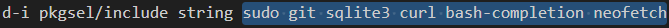
Rappel : les paquets sont une liste d’applications qui seront installées sur notre système. Ici, ils le sont par défaut, sans un quelconque effort de notre utilisateur user !
Les fichiers de l’installation automatisée sont maintenant prêts à l’emploi. Pour les appliquer, il faut aller dans le répertoire VirtualBox de notre machine virtuelle (généralement /users/nomutilisateur/VirtualBox VMs/nommachine) et ajouter le dossier autoinstall préparé et les fichiers le contenant.
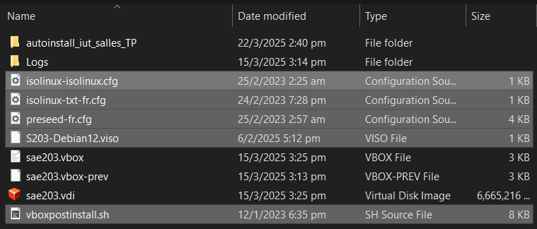
De plus, il ne faut pas oublier d’ajouter un UUID dans le fichier .viso. 22
Un UUID est un identifiant unique universel d’une taille de 128 bits. La machine virtuelle en a besoin pour identifier le système.
Pour ce faire, le plus simple est d’en générer un en ligne. N’importe quel générateur suffit.

Ensuite, il faut l’ajouter dans la case spécifiée dans le ficher .viso.
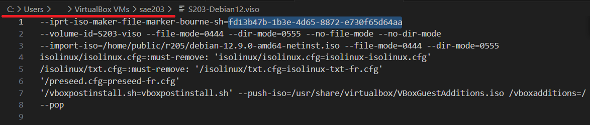
Il ne reste maintenant plus qu’à lancer la machine virtuelle et attendre.
C’est donc la fin de la semaine 1.
Nous avons globalement constaté que la plupart des difficultés rencontrées pouvaient en réalité être répondues d’elles-mêmes dans le fichier, qui, par sa clarté et ses indications commentaires, nous dit souvent implicitement que l’instruction est déjà écrite et qu’il n’y a plus qu’à la modifier pour installer le paquet que l’on souhaite (par exemple).
Par ailleurs, notre équipe n’étant pas toujours à l’aise avec les commandes bash, il a fallu chercher sur le Web, qui nous a donné des réponses (les demandes sont assez courantes donc les commandes sont aussi universelles) que l’on a testé, qui ont parfois marché et d’autres fois non.
Ce mode d’apprentissage, débutant par des échecs probables, se finissant par un succès quasi certain, fait de cette méthode parfois frustrante un moyen finalement très efficace pour progresser dans nos compétences.
Semaine 03 : Étude applications clientes
Lors de cette semaine, nous parlerons de git et de ses déclinaisons (applications clientes).
Mais tout d’abord, qu’est-ce que git ? Il faut le comprendre, car c’est un outil très utilisé dans l’informatique. Git est très fortement relié à Linux. En effet, Git a été développé par Linus Torvalds (créateur de Linux) en 2005 pour répondre aux besoins du projet Linux après l’abandon de BitKeeper, un logiciel de gestion de versions auparavant utilisé par la communauté Linux. Son objectif était de créer un outil rapide, distribué et fiable pour la gestion du code source. Depuis, Git est devenu la référence en matière de gestion de versions, adopté par la plupart des entreprises et projets open source. 23
Question(s) 0. Configuration globale de git
Configuration rapide de git
git config --global user.name "Prénom Nom"
git config --global user.email "votre@email"
git config --global init.defaultBranch "master" Nous avons ajouté notre nom et email à la configuration git. Puis, notre par défaut sera . Cette branche sera la destination de nos fichiers en . 24
Un commit est une opération qui envoie les dernières modifications du code source au référentiel, faisant de ces modifications une partie de la révision principale du référentiel. 25
Question(s) 1. Préliminaire
Qu’est-ce que le logiciel gitk ? Comment se lance-t-il ?
Le logiciel est un outil graphique pour visualiser l’historique des commits dans un dépôt Git. Il permet de naviguer facilement entre les commits, de voir les modifications apportées et de suivre l’évolution du projet. 26 Il se lance avec la commande
gitk
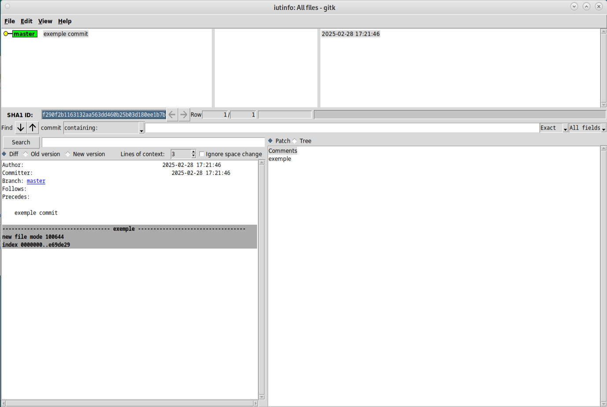
Qu’est-ce que le logiciel git-gui ? Comment se lance-t-il ?
Le logiciel est une interface graphique pour gérer les dépôts Git. Elle permet d’effectuer des opérations courantes comme les commits, les merges et les pushes, offrant une alternative visuelle aux commandes en ligne de commande. Il est très similaire à gitk (le concept sera un peu toujours le même). 27 Il se lance avec la commande
git-gui
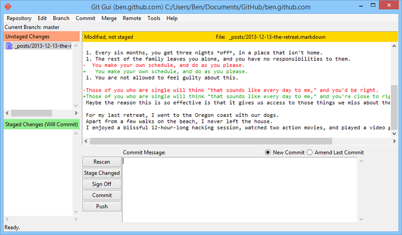
Question(s) 2. Comparons
Dans cette partie, nous aurons choisi smartgit.

Pourquoi avez-vous choisi ce logiciel ?
Nous avons choisi smartgit pour sa gratuité (à usage non-commercial) et pour sa bonne réputation. Nos principaux critères sont la facilité d’utilisation pour les outils de base. Il propose également des fonctionnalités plus complexes.
Comment l’avez vous installé ?
Il a globalement suffi de suivre les instructions présentes sur le site 28 Nous l’avons installé avec le ‘bundle debian’ proposé sur le site, qui simplifie le processus en regroupant tous les fichiers nécessaires. Il suffit ensuite les commandes suivantes dans un terminal :
sudo dpkg -i <smartgit*.deb>dpkg est l’outil de gestion des packages Debian, et l’option -i signifie “installer”. le caractère * dans
smartgit*.debsignifie que nous spécifions n’importe quel fichier commençant parsmartgitet se terminant par.deb.
En cas de problème, la commande suivante est utile :
sudo apt --fix-broken installapt est similaire à dpkg, nous servant pour manipuler des packages (paquets).
--fix-broken installcette option indique à apt qu’il faut corriger d’éventuelles dépendances manquantes en cas de problème.
Comparez-le aux outils inclus avec git (et installé précédemment) ainsi qu’avec ce qui serait fait en ligne de commande pure : fonctionnalités avantages, inconvénients…
Le logiciel est assez complet et a été plutôt facile à prendre en main. Il est possible de faire des micros-sauvegardes. Globalement nous sommes des débutants dans le milieu de git donc nous ne pouvons pas tout lister, mais nous sommes satisfaits de SmartGit pour l’utilisation que l’on en a fait.
Un apprentissage plus de git nous sera dispensé tout au
long du Semestre 2 dans la ressource Qualité de
développement, donc il est toujours utile d’en apprendre
plus.
Conclusion du rapport intermédiaire
Ce rapport intermédiaire est désormais fini. Du détail a été apporté dans l’obtention de nos réponses, ainsi il n’est que logique de détailler également la construction de ce rapport.
Premier parcours
Dans un premier temps, nous avons répondu aux questions sous forme brute. Ensuite, nous avons décidé d’une mise en page type à reproduire sur chaque question (question en gras, réponse en normal). Nous avons vu les parties où il était possible d’utiliser des formules plus complexes (tableau, sources, lignes de commande…).
Détails
TeX Live est assez fourni (plus de 3000 paquets installés pendant 1h30) donc nous avons testé beaucoup de façons de compiler le document (différentes polices, paramètres, templates…).
TeX est, un peu comme le markdown, un language de typographie assez avancé laissant beaucoup de place au paramétrage. Il est très utilisé dans l’écriture de documents académiques. Dans notre document, nous en utilisons une partie, grâce à ses nombreuses déclinaisons.
Enfin, quelques petites retouches ont été apportées, croyant en l’importance des détails.
Quelques paramètres | détails utilisés :
Modification Description margin 3cm, très bien “macro” de TeX. Trouvé dans la documentation arborescence fichiers Les fichiers, images sont stockés à des endroits précis et de façon propre. images Modifications rapides de l’image (entourer, surligner) sur GIMP invites de commandes intégration avec ’’’
Ce rapport, car , peut être sujet à de futurs changements dans sa version finale.
Semaine 04 : Installation de Gitea
Nous attaquons alors cette semaine 4 par une installation de Gitea. Commençons sans plus attendre.
Question(s) 1. A propos de Gitea
Qu’est-ce que Gitea ?
Gitea est un de développement logiciel tout-en-un, auto-hébergé et sans douleur. Il comprend l’hébergement Git, l’examen du code, la collaboration en équipe, le registre des paquets et le CI/CD. Il est similaire à GitHub, Bitbucket et GitLab.
(Traduction de la documentation officielle 29)
À quels logiciels bien connus dans ce domaine peut-on le comparer (en citer au moins 2) ?
Gitea peut être comparé, et se compare, à GitHub EE, GitLab CE (Community Edition) et à BitBucket. 30
Qu’est-ce qu’un fork (dans le domaine du développement logiciel bien entendu) ?
Un fork est une duplication. C’est est un nouveau référentiel qui partage le code et les paramètres de visibilité avec le référentiel « en amont » d’origine. Les duplications sont souvent utilisées pour itérer sur les idées ou les modifications avant qu’elles ne soient proposées à nouveau au référentiel en amont, par exemple dans des projets open source ou lorsqu’un utilisateur n’a pas d’accès en écriture au référentiel en amont. 31
De quel logiciel Gitea est-il le fork ? Ce logiciel existe-t-il encore ?
Gitea est le fork, soit la duplication, ou une dérivée, du Gogs. Ce logiciel existe encore, mais n’est pas très connu. Les sources sur le fork sont d’ailleurs minces mais suffisantes. Le site officiel de Gitea mentionne toutefois que quasiment tout le code a changé. 32
Installation de Gitea ; opérations
Nous allons désormais procéder à l’installation de Gitea, le tout en expliquant de façon .
Cette section contiendra :
- commandes réalisées avant, pendant et après l’installation ;
- des fichiers créés ;
- des fichiers de configuration.
Nous suivrons les indications de l’installation binaire venant de la documentation officielle de Gitea. Les commandes les plus importantes seront accompagnées d’une image pour renseigner le retour.

Ici, nous avons le binaire de gitea. Ce fichier contient en quelque sorte le code source de Gitea. Il sera placé dans notre répertoire courant et nous allons ensuite le manipuler.
Ensuite, la commande
chmod +x gitearend le fichier exécutable.
Pour s’assurer que le binaire n’a pas été modifié, on vérifie sa signature GPG. Nous allons vérifier son authenticité en vérifiant la validité de la signature. Cela permet de s’assurer que nous avons obtenu la version officielle du binaire.
gpg --keyserver keys.openpgp.org --recv 7C9E68152594688862D62AF62D9AE806EC1592E2
gpg --verify gitea-1.23.5-linux-amd64.asc gitea-1.23.5-linux-amd64Pour la , une signature GPG, ou GNU-PG, est un type de beaucoup utilisé sur les systèmes d’exploitation Linux, notamment dans notre cas ; la vérification de fichiers installés.

Image parlante du cas cryptage GPG 33
Avant d’installer Gitea, nous devons nous assurer que Git (comme introduit plus haut) est installé.
git --versionEnsuite, il nous faut créer un utilisateur dédié pour Gitea. Ici, nous ajoutons un nouvel utilisateur à notre système qui sera nommé git.
- Différentes options seront utilisées :
- system signifie que l’utilisateur n’a pas d’accès interactif et possède un UID en dehors de la plage des utilisateurs normaux.
- gecos représente la description donnée à l’utilisateur.
- group va créer un groupe du même nom que l’utilisateur où il sera ajouté automatiquement.
- disabled-password désactive le mot de passe de l’utilisateur.
- home /home/git donne ce répertoire comme le répertoire personnel de l’utilisateur.
- , cet utilisateur aura le sobre nom de git.
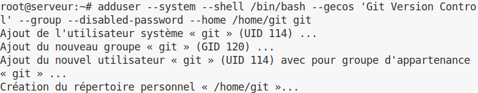
Gitea a besoin de répertoires pour fonctionner. Nous devons alors en créer certains. Nous donnerons aussi les droits nécessaires pour que l’utilisateur git puisse les exécuter.
Au lieu de donner une description globale de la chose, il sera préférable – et préféré ici de décrire une à une les commandes utilisées ;
mkdir -p /var/lib/gitea/{custom,data,log}
Établit les répertoires custom, data, et log dans /var/lib/gitea s’ils n’existent pas déjà. L’option -p permet de créer les répertoires parents nécessaires.
chown -R git:git /var/lib/gitea/
Change le propriétaire et le groupe de tous les fichiers et répertoires dans /var/lib/gitea/ pour qu’ils appartiennent à l’utilisateur git et au groupe git. L’option -R applique la commande de manière récursive.
chmod -R 750 /var/lib/gitea/
Modifie les permissions de tous les fichiers et répertoires dans /var/lib/gitea/ pour que le propriétaire ait tous les droits (lecture, écriture, exécution), le groupe ait les droits de lecture et d’exécution, et les autres utilisateurs n’aient aucun droit. L’option -R applique la commande de manière récursive.
mkdir /etc/gitea
Crée le répertoire /etc/gitea s’il n’existe pas déjà.
chown root:git /etc/gitea
Change le propriétaire du répertoire /etc/gitea pour qu’il appartienne à l’utilisateur root et au groupe git.
chmod 770 /etc/gitea
Modifie les permissions du répertoire /etc/gitea pour que le propriétaire et le groupe aient tous les droits (lecture, écriture, exécution), et les autres utilisateurs (other) n’aient aucun droit.
Après avoir compris le sens de chaque commande, nous pouvons les exécuter en même temps (ce qui est prévu dans l’installation).
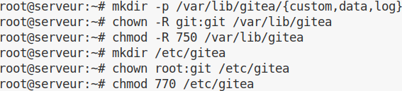
Nous allons définir le répertoire de travail de gitea dans un espace dédié. Cela signifie que les fichiers seront utilisés à un endroit propre et défini.
export GITEA_WORK_DIR=/var/lib/gitea/
Enfin, nous allons copier le binaire Gitea dans un répertoire où il peut être exécuté par tous les utilisateurs.
cp gitea /usr/local/bin/gitea
Cela va copier le binaire Gitea dans /usr/local/bin pour qu’il soit accessible globalement.
Nous pouvons lancer Gitea après avoir fait tout le nécessaire.
Nous avons rencontré quelques erreurs au cours de cette installation mais elles s’expliquaient juste par une mauvaise lecture de l’installation recommandée. Il est important de tout lire au lieu de juste copier les commandes une par une.
Cette partie est optionnelle, mais par soucis du détail, elle sera naturellement décrite comme partie intégrante de l’installation.
Nous allons maintenant créer un service linux pour Gitea. Cela permettra de lancer automatiquement Gitea à chaque démmarage du serveur.
Nous pouvons récupérer un fichier de configuration de service à modifier ici : https://github.com/go-gitea/gitea/blob/release/v1.23/contrib/systemd/gitea.service
Pour ensuite le placer à cet emplacement :
/etc/systemd/system/
Il est aussi possible d’obtenir un fichier préconfiguré pour nos réglage avec la commande :
wget https://raw.githubusercontent.com/go-gitea/gitea/master/contrib/systemd/gitea.service -P /etc/systemd/system/
Nous pouvons maintenant lancer le service, et, par la suite, il se lancera automatiquement avec la commande :
systemctl enable --now gitea
Pour vérifier le bon fonctionnement du service (et obtenir des informations sur le statut de Gitea) on peut utiliser la commande :
systemctl status gitea
Pour arrêter le service :
systemctl stop gitea
Pour le relancer :
systemctl restart gitea
Dans le cas d’un accès au serveur, il faudra permettre l’utilisation d’un port.
Dans le cas d’une machine virtuelle, il faudra faire une redirection de port.
Sinon, il convient d’utiliser :
ufw allow 3000/tcp
Vous pouvez accéder au serveur depuis un navigateur web grâce à cette
url :
localhost:3000 depuis votre machine (ou depuis votre
machine princcipale avec une machine virtuelle)
ou alors :
“ip serveur”:3000 depuis une autre machine
Maintenant, nous pouvons paramétrer Gitea par la page Web !

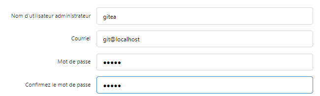
Il est important de ne pas oublier de redéfinir les droits d’accès aux fichiers de configuration de Gitea.
chmod 750 /etc/gitea
chmod 640 /etc/gitea/app.ini
Vous pouvez maintenant utiliser les fonctionnalités à part entière de Gitea !
Vous pouvez inscrire de nouveaux utilisateurs et les
gérer de façon intuitive.
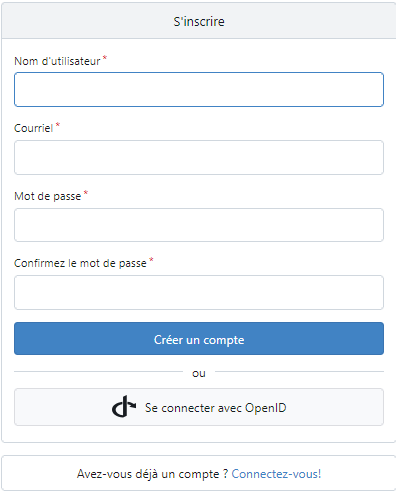
Question(s) 2. Mise à jour
Donnez la version que vous avez installé et la commande permettant d’obtenir cette information.
Pour obtenir la version installée de Gitea, nous pouvons utiliser la commande :
gitea --version
Ici, nous obtenons la version 1.23.5.
Comment faire pour mettre à jour le binaire de votre service sans devoir tout reconfigurer ? Essayez en mettant à jour vers la version 1.24-dev.
Pour mettre à jour le binaire, il faut télécharger le nouveau binaire de la version voulue puis remplacer l’ancien dans le dossier /usr/local/bin.
Nous pouvons tester en mettant à jour vers la version 1.24-dev avec la commande :
wget -O /usr/bin/gitea https://dl.gitea.com/gitea/main-nightly/gitea-main-nightly-linux-amd64
Il ne faut pas oublier d’arrêter le service avant, pour le relancer après.
Tests d’utilisation
Le logiciel Gitea, après des efforts d’installation (et de configuration) plus ou moins importants, compte bien nous être utile.
Ajout d’un projet depuis l’interface Web ;
Nous avons ajouté de façon simple les TP java du second semestre avec l’utilisateur numéro 1.

Le java est un langage de programmation dont l’apprentissage nous est dispensé tout au long de la formation.
Exemple de code java :
public class test {
public static void main(String[] args){
System.out.println("je suis java");
}
}Ajout de cette SAé ;
Nous avons ajouté cette SAé avec l’utilisateur numéro 2.

Partage aux différents utilisateurs ;
Depuis l’interface administrateur, nous pouvons gérer les comptes des utilisateurs ainsi que leurs accès
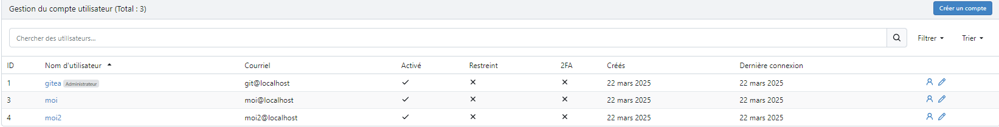
Nous pouvons également supprimer un utilisateur de notre projet.

D’autres actions sont possibles ;
Les permissions dans Gitea permettent de gérer l’accès aux différentes fonctionnalités d’un dépôt. Par exemple, les unités telles que le code, les issues, les pull requests, les releases, le wiki, les projets, les packages, les actions et les paramètres peuvent être configurées avec des niveaux d’accès spécifiques. Les niveaux de permission incluent ‘Read’ (lecture), ‘Write’ (écriture) et ‘Admin’ (administration), chacun offrant des droits d’accès et de modification différents. 34
Il est plus simple de visualiser ça sous la forme d’un tableau :
| Nom | Lecture (read) | Écriture (write) | Admin |
|---|---|---|---|
| Code | Voir l’arborescence, les fichiers, commits, branches, etc. | “Push” du code. | - |
| Issues | Voir les issues et en créer de nouvelles. | Ajouter des labels, assigner, fermer. | - |
| Pull Requests | Voir et créer de nouvelles pull requests. | Ajouter des labels, assigner, fermer. | - |
| Releases | Voir les releases et télécharger des fichiers. | Créer/éditer des releases. | - |
| Wiki | Voir les pages du wiki. Cloner le dépôt du wiki. | Créer/éditer des pages du wiki, “Push”. | - |
| Wiki Externe | Lien vers un wiki externe. | - | - |
| Tracker Externe | Lien vers un tracker d’issues externe. | - | - |
| Projets | Voir les colonnes des projets. | Modifier les issues à travers les colonnes. | - |
| Packages | Voir les packages. | Télécharger/supprimer des packages. | - |
| Actions | Voir les journaux des actions. | Approuver / Annuler / Redémarrer. | - |
| Paramètres | - | - | Gérer le dépôt. |
Cette partie sur gitea et sa configuration a été assez compliquée pour nous en comparaison au reste du rapport. De plus, nous n’avons pas aimé faire cette partie, nous l’avons souvent trouvé frustrante. Le fait que ce soit la dernière partie y contribue sûrement. Des problèmes comme la fusion de branches et la gestion des accès ont causé beaucoup de trouble.
Néanmoins il a fallu avancer et avec assez de recherche et d’essais, le travail finit toujours par payer.
Nos principales erreurs étaient dues à de l’inattention et parfois une précipitation sans toujours lire la documentation. Avec une lecture assidue de la documentation et de forums de déboggage aux problèmes courants, cela devient plus facile.
Pour aller plus loin
Il n’y a de que notre imagination, donc cette est naturelle.
Qu’est-ce que l’intégration et la livraison continue ?
L’intégration continue (CI) est une pratique logicielle qui nécessite un committing fréquent du code dans un dépôt partagé. La plupart du temps, le fait de commiter le code permet de détecter plus rapidement les , et réduit la quantité de code dont un développeur a besoin pour le débogage lorsqu’il recherche la source d’une erreur. Les mises à jour fréquentes du code facilitent également la fusion des modifications apportées par différents membres d’une équipe de développement logiciel.
La livraison continue consiste à ce que les développeurs de logiciels suivent des cycles courts et continus pour mettre à jour le code, tout en faisant appel à l’automatisation pour accélérer la sortie des nouvelles versions. Ce mot va de pair avec le métier/la catégorie de DevOps. 35
Ajoutez et testez ces fonctionnalités (avec vos sources Java ou avec votre rapport markdown).
Cette partie est présente dans les Tests d’utilisation.
Il est possible que nous ayons mal compris le sujet de cette question.
Semaine 05 : Rendu
Conclusion
- Les principaux points qui ont :
- Le projet pandoc latex template master, amélioration de eisvogel disponible sur github, est un ensemble de templates extrêmement complet et fourni avec beaucoup d’exemples nous a plus que satisfait sur la mise en page que nous souhaitions. Nous ne trouvions pas de bons templates ou alors ils étaient incompatibles avec notre format. Les macros TeX ont beaucoup aidé pour aller plus loin en terme de graphisme. Ensuite, nous avons beaucoup joué avec les fichiers TeX, les tailles, les polices… tout cela pour trouver chaussure à notre pied.
Dans notre cas, un template TeX est une façon de styliser notre document en modifiant des détails comme le placement des objets, les couleurs, ou tout simplement l’amélioration graphique globale à l’œil. Par exemple, cette boîte de texte est permise par le template utilisé.
Ainsi, nous aurions parfois préféré écrire ce rapport entièrement en TeX et ses déclinaisons car nous pensons qu’il est plus complet et adapté pour obtenir la qualité que nous souhaitons ;
Le format Markdown/Pandoc reste très bien et il n’est pas un problème, c’est juste que TeX et ses déclinaisons nous permettraient d’aller encore plus loin et nous l’essaierons pour de futurs projets.
- Mais surtout, beaucoup de positif est à retenir !
Auparavant, nous pensions que les documents que nous pouvons trouver dans les sujets officiels étaient compliqués à obtenir. En réalité, après avoir obtenu la bonne configuration, il devient très facile de produire rapidement des documents à l’allure propre et soignée.
Notre marge de progrès est encore grande car ce projet n’est qu’une première introduction dans l’écriture de rapports au format académique.
D’autres SAé pourront être écrites dans le même thème en excluant toutes les heures de recherche que nous avons dû faire pour obtenir ce type de document. C’est un investissement à prendre mais il est très probable qu’il soit rentable dans le futur !
Enfin, nos connaissances en réseau/installation machine, le support de ce document, ont pu être améliorées là où certaines lacunes pouvaient subsister.
Au cours de ces semaines, ce projet nous aura donc beaucoup appris sur les , les , mais surtout sur une nouvelle manière de travailler académiquement.
https://fr.wikipedia.org/wiki/Processeur_64_bits↩︎
https://fr.wikipedia.org/wiki/Network_address_translation↩︎
https://en.wikipedia.org/wiki/Optical_disc_image↩︎
https://mate-desktop.org/fr/, https://www.gnome.org/about↩︎
https://fr.wikipedia.org/wiki/Serveur_web↩︎
https://wiki.debian.org/fr/SSH↩︎
https://fr.wikipedia.org/wiki/Proxy↩︎
https://wiki.debian.org/SystemGroups↩︎
https://debian-facile.org/doc:systeme:uname↩︎
https://docs.oracle.com/cd/E26217_01/E35193/html/qs-guest-additions.html↩︎
https://manpages.debian.org/bullseye/manpages-fr/mount.8.fr.html, https://www.debian-fr.org/t/mount-et-fstab-pour-les-nuls/22623↩︎
https://www.debian.org/intro/about.fr.html,https://www.debian.org/doc/manuals/debian-faq/basic-defs.fr.html#pronunciation↩︎
https://wiki.debian.org/fr/LTS↩︎
https://www.debian.org/security/faq.fr.html#lifespan↩︎
https://www.debian.org/releases/index.fr.html↩︎
https://people.debian.org/~miriam/toy_story/↩︎
https://wiki.debian.org/fr/DebianBullseye#Architectures↩︎
https://fr.wikipedia.org/wiki/Historique_des_versions_de_Debian↩︎
https://www.debian.org/releases/trixie/,https://www.debian.org/releases/index.fr.html,https://wiki.debian.org/DebianForky↩︎
https://doc.ubuntu-fr.org/sudoers↩︎
https://www.debian.org/releases/stable/s390x/apbs04.fr.html↩︎
https://docs.oracle.com/en/virtualization/virtualbox/6.0/admin/viso.html, https://en.wikipedia.org/wiki/Universally_unique_identifier↩︎
https://git-scm.com/book/en/v2/Getting-Started-A-Short-History-of-Git↩︎
https://git-scm.com/book/fr/v2/Les-branches-avec-Git-Les-branches-en-bref, https://docs.syntevo.com/SmartGit/Latest/Manual/GitConcepts/CommonTerms↩︎
https://en.wikipedia.org/wiki/Commit_(version_control)↩︎
https://git-scm.com/docs/gitk↩︎
https://git-scm.com/docs/git-gui↩︎
https://www.syntevo.com/smartgit/download/#installation-instructions↩︎
https://docs.gitea.com/↩︎
https://docs.gitea.com/installation/comparison↩︎
https://docs.github.com/fr/pull-requests/collaborating-with-pull-requests/working-with-forks/fork-a-repo↩︎
https://docs.gitea.com/, https://blog.gitea.com/welcome-to-gitea/, https://news.ycombinator.com/item?id=13452025↩︎
https://cran.r-project.org/web/packages/gpg/vignettes/intro.html↩︎
https://docs.gitea.com/usage/permissions↩︎
https://docs.github.com/fr/actions/about-github-actions/about-continuous-integration-with-github-actions, https://about.gitlab.com/fr-fr/topics/continuous-delivery/ https://learn.microsoft.com/fr-fr/devops/deliver/what-is-continuous-delivery↩︎